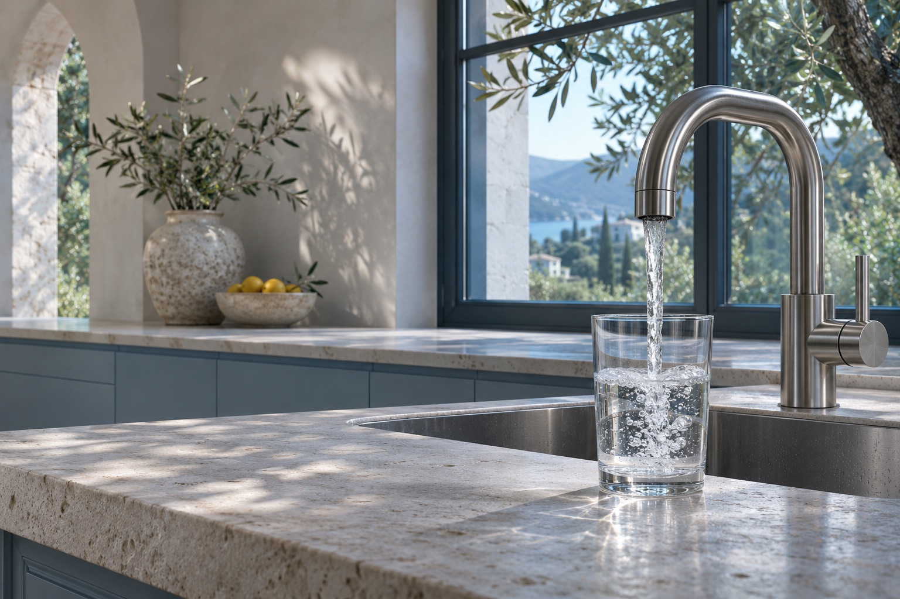
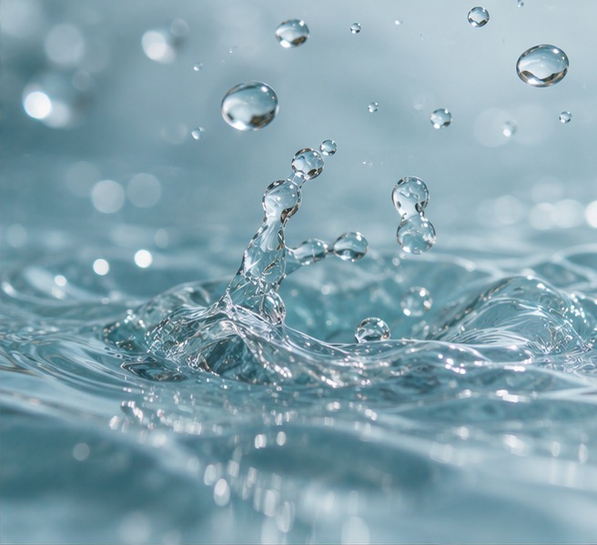

Su Arıtma
Davutlar’da yazlığı açarken su arıtma kontrolü
Aylarca kapalı kalan bir yazlığı açarken mutfak bağlantılarına ve cihazın üretici talimatlarına sırayla bakın.
Yazıyı okuİVSU GRUP · Kuşadası, Aydın
Su kaynağınıza, mutfaktaki alana ve kullanımınıza uygun sistemi seçmek için seçenekleri inceleyin.


Mutfak dolabındaki ölçüyü, su bağlantısını ve günlük kullanım miktarını birlikte değerlendirin.
Rehberi inceleyin
Membran performansı, besleme suyu basıncı ve gider bağlantısı için hangi bilgilerin gerektiğini öğrenin.
Rehberi inceleyin
Mevcut cihazınızla uyumlu filtreyi model kodu ve bakım geçmişiyle belirleyin.
Rehberi inceleyin
Davutlar ve Güzelçamlı çevresindeki yazlıklarda sezon başı kontrollerini ve cihaz bakım kaydını planlayın.
Rehberi inceleyin| Konu | Hangi ihtiyaç için? | Hangi bilgiler gerekir? |
|---|---|---|
| Tezgâh Altı Su Arıtma | İçme ve yemek hazırlamada kullanılan mutfak suyunu tek noktada değerlendirmek | Dolap ölçüsü, musluk konumu, gider ve bakım erişimi |
| Ters Ozmoz Sistemleri | Su analizine göre belirli çözünmüş maddelerin azaltımını değerlendirmek | Modelin performans belgesi, basınç, debi ve gider |
| Su Arıtma Filtreleri | Mevcut sistem için uyumlu kartuşu veya membranı belirlemek | Model etiketi, kartuş kodu, bağlantı ve son değişim tarihi |
| Yazlıklarda Su Arıtma ve Bakım | Dönemsel kullanılan bir evde mevcut cihazı ve sezon başı kontrollerini planlamak | Su kaynağı, cihazın kapalı kaldığı süre, üretici talimatları |
Şebeke veya depo bilgisi, sürekli ya da dönemsel kullanım ve günlük tüketim miktarı.
Dolap ölçüsü, soğuk su vanası ve giderin konumu. Varsa mevcut cihazın model etiketi.
Cihaza dahil olan parçalar, kurulum kapsamı, kartuş tedariki ve bakım maliyetini sorun.
Cihaz ve tank ölçüleri modele göre değişir. Kurulum şemasındaki ölçülerin yanında kartuşu çıkarabilmek ve vanaya ulaşabilmek için gereken boşluğu dikkate alın.
Kapasite ve azaltım performansı modele, besleme suyuna ve çalışma koşullarına bağlıdır. Modelin doğrulanmış iddialarını ve işletme sınırlarını kontrol edin.
Aşamaların süre ve kapasite sınırları farklı olabilir. Mevcut modelin bakım planını ve her parçanın son değişim tarihini esas alın.
Üreticinin yeniden devreye alma ve bakım talimatlarına bakın. Su kaynağına ilişkin şüphe varsa güncel bilgi ve gerektiğinde uygun analiz için yetkili kuruma danışın.
İVSU Blog
Su Arıtma
Aylarca kapalı kalan bir yazlığı açarken mutfak bağlantılarına ve cihazın üretici talimatlarına sırayla bakın.
Yazıyı oku
Su Arıtma
Bir yazlıkta arıtma ihtiyacını belirlemek suyun binaya nasıl ulaştığını öğrenmekle başlar.
Yazıyı oku
Su Arıtma
Ortak su deposu olan binalarda depo kayıtlarını ve daire içindeki cihaz bakımını ayrı ayrı takip edin.
Yazıyı oku